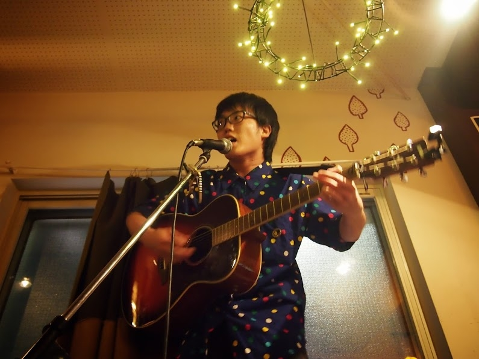
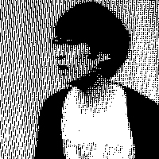

12曲PVより、2曲を先行公開。
自主企画2本立て
2014.3.8(土)
deronderonderon pre
”みんなDIEすき！vol.1”
@大鳥居clubEARTH
出演者
クレイマンクレイマン/ねこね、こねこね/花園distance/deronderonderon
OPEN 17:00(予定)
START 17:30(予定)
前売り¥1500
当日 ¥2000
2014.3.29(土)
deronderonderon pre
”拝啓DIE先輩(仮) vol.1”
@横浜B.B.street
出演者
People Jam / deronderonderon and more....
START TBA
OPEN TBA
前売り ¥2000
当日 TBA

マーライオン
1993年横浜生まれ。
ニヤニヤして聴いてもらうというテーマで歌ってます。
発表作品に『ニヤニヤロックンロールベスト』（2010年）
『ニヤニヤロックンロール全曲集』（2010年）
『日常』（2012年）『19才』（2013年）がある。
毎日ニヤニヤしたくて日々ニヤニヤ計画を練っています。
マーライオン公式ホームページ

Yuji Ando
golfというエレクトリックグループに所属しています。
golf-music.com